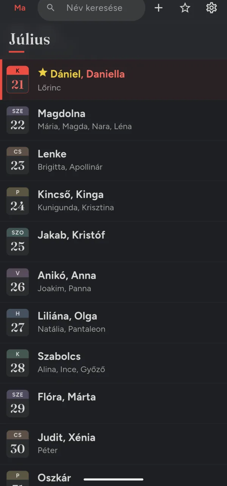
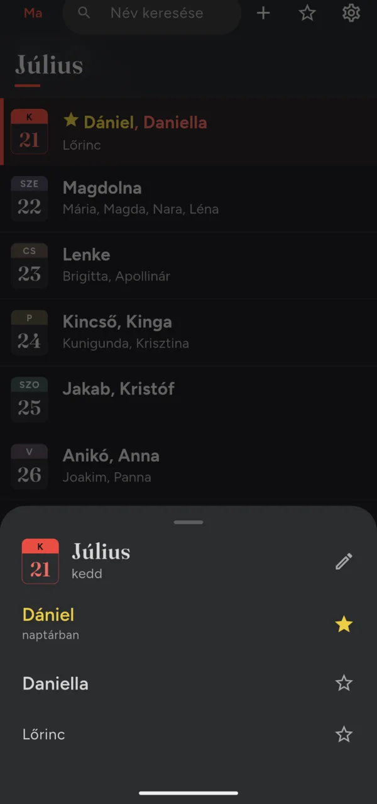
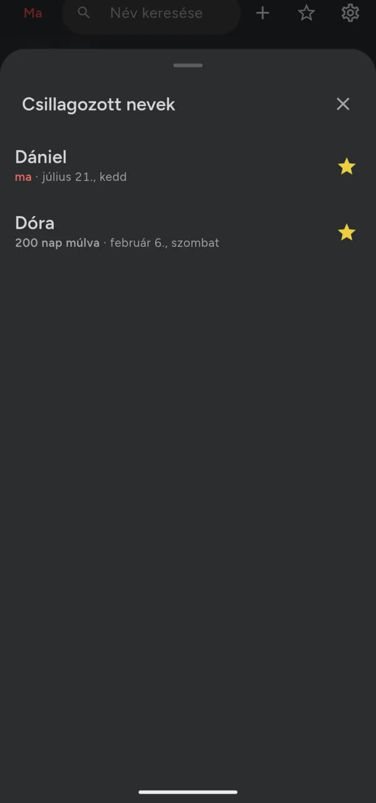
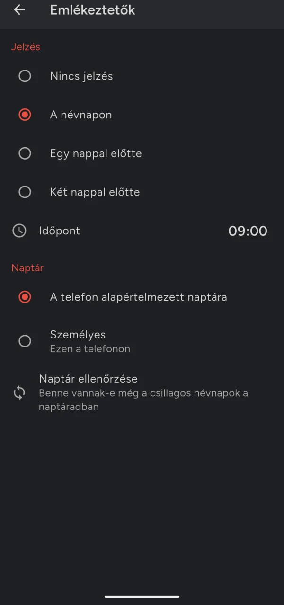
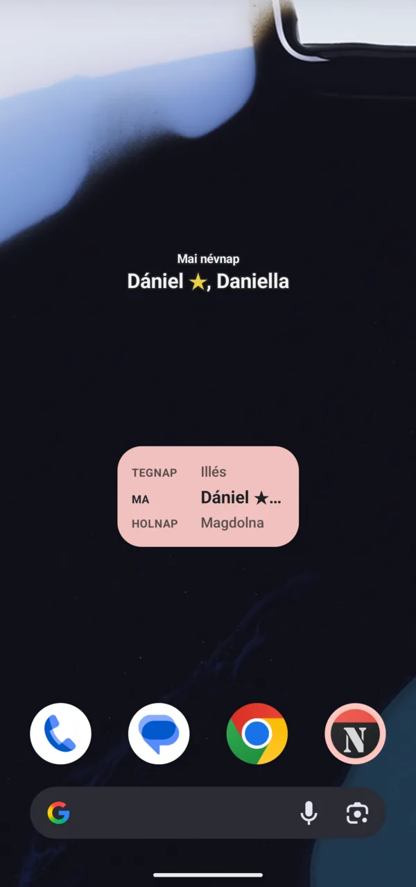
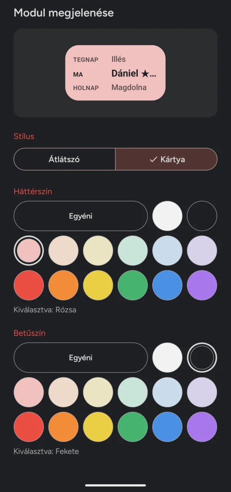
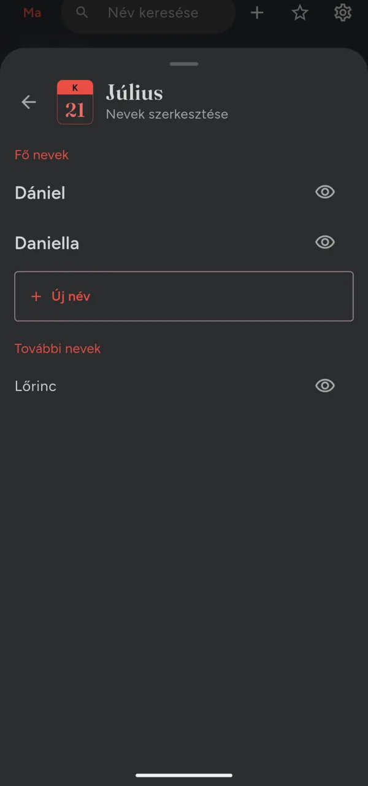

Minden nap egy naptárlap
A lista úgy néz ki, mint egy falinaptár: minden napnál ott a hét napja, a dátum és az összes név, elöl a fő nevekkel. A mai nap piros, és a Ma gomb bárhonnan visszavisz hozzá.
Ki ünnepel ma? És ki jövő héten?
A Névnapok az év minden napját megmutatja a hozzá tartozó nevekkel, és szól, mielőtt egy fontos névnap elmúlna. Nincs fiók, nincs reklám: minden a telefonodon marad.

A lista úgy néz ki, mint egy falinaptár: minden napnál ott a hét napja, a dátum és az összes név, elöl a fő nevekkel. A mai nap piros, és a Ma gomb bárhonnan visszavisz hozzá.

Írd be a nevet, ékezet nélkül is: a „daniel” megtalálja Dánielt. Koppints a napra, és csillagozd meg, akinek a névnapját nem akarod elfelejteni.


A csillagozott nevek névnapja bekerül a telefonod naptárába, így ott is látod, és a telefon emlékeztet: a névnapon, vagy egy-két nappal előtte, abban az órában, amit választasz.
A csillagozott nevek listája a legközelebbivel kezdődik, és megmutatja, hány nap van még hátra.


Tedd ki a mai névnapot, vagy a tegnapit, a maival és a holnapival együtt, iPhone-on és Androidon is. Androidon minden modul saját megjelenést kaphat: átlátszó, körvonalas betűkkel, vagy színes kártya.

Add hozzá a saját napjához, és ugyanúgy megcsillagozhatod, mint bármelyik másikat. Amelyik névre nincs szükséged, azt elrejtheted, és bármikor visszahozhatod.